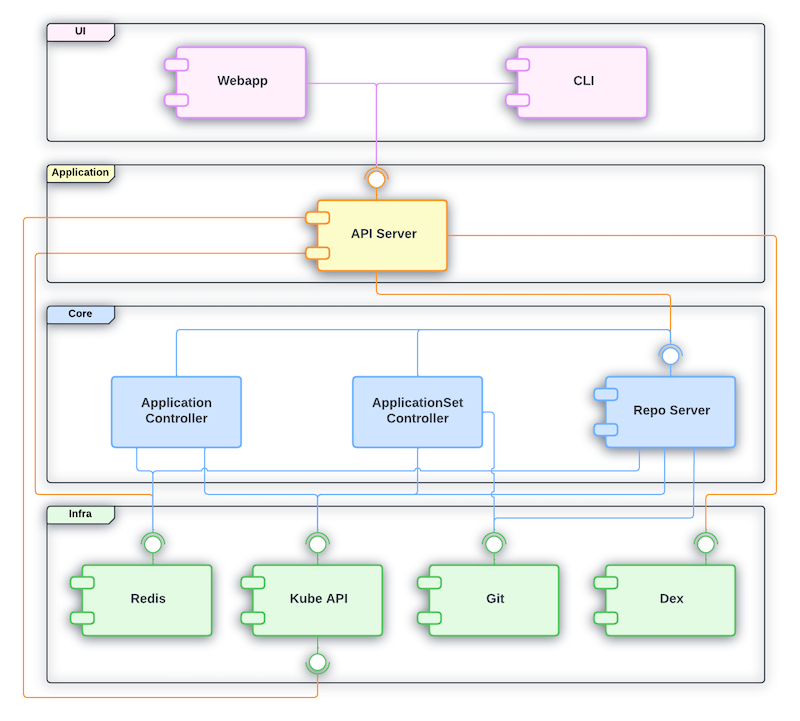

Intro
I thought I was understand ArgoCD enough, in the past I have running ArgoCD with multiple K8S Cluster inside it. (>10 clusters). And have around 500-600 ArgoCD Applications in single cluster. But I was contributor in there, not who build from scratch, it is 100% misconceptions that I often encounter. Even I had Certified Argo Project Associate (CAPA) but it was a joke for me, no value gained! So that is the reason this article born. To help me understand more "basic" knowledge of ArgoCD.
Ok, we will go through sections below in this article:
- Architecture & Reconciliation loop
- Application - atomic unit
- Cluster registration
- AppProject - governance layer
- ApplicationSet - factory pattern
- Sync mechanics deep dive
- RBAC 3 layers
- Operational gotchas
- Recap - mental model

Architecture & Reconciliation loop
- Static View: What the fuck components are
- Dynamic View: How the fuck they are looping
ArgoCD is not fucking monolith, it is fucking workload run in namespace argocd in common and contains 5 major components.
First I thought ArgoCD watch mechanism is same like K8S watch mechanism, but look like it does has little different, let's figure out!
Kubernetes Controller Manager: Real-time Watch (Event-Driven)
In K8S, Controllers (like ReplicaSet Controller, Deployment Controller), they setup a HTTP Long-Polling via watch mechanism to Kube-ApiServer. For example:
- Desired State: state stored in ETCD (example: replicas: 1)
- Actual State: actual state of pod in the cluster
- When thing changes: Kube-ApiServer will send an event to let's Controller Manager know, Controller Manager see actual pod replicas = 0, but desired = 1. It makes a requests to Kube-ApiServer to create pod replicas that matched desired state. That is why we delete pod in deployment that have 1 replicas, it will auto bring new pod!
Conclusion: K8S works with Event-Driven, if events appear, modify/changes....
Different between ArgoCD and Kubernetes
| Property | K8s Controller Manager | ArgoCD (Application Controller) |
|---|---|---|
| Source keep desired state | etcd | Git repository (outside of cluster) |
| How to recognize changes | Watch API (Real-time events) from Kube-ApiServer | Polling periodically to check Git or webhook |
| Main quest | Make sure resources run in desired state which stored at etcd | make sure actual/live cluster state match desired state (Git) |
Overview when combine ArgoCD + K8S
Actually when we are using GitOps (ArgoCD + K8S), we are using double Reconciliation loop:
- First loop (ArgoCD): compare Git (desired) <--> K8s object spec read via kube-apiserver (this is "actual" from ArgoCD's view — but it's also exactly what feeds into loop 2 below as "desired"). If Git changes, or someone drifts the live spec away from Git (and selfHeal: true is set), ArgoCD re-applies via kube-apiserver to overwrite the drift back to match Git.
-
Second loop (Kubernetes, independent of ArgoCD): compare K8s object spec in etcd (desired at this layer) <--> actual runtime state (is the pod really running as spec says). If a pod dies, K8s controllers recreate it to match spec.
-
When someone used
kubectl delete pod, K8S controllers will recreate that pod (ofc, I'm talking about Deployment/ReplicaSet not fucking standalone pod) -
If someone used
kubectl edit deploymentto change resource/spec, ArgoCD will notice and change to match with data in Git (if selfHeal: true)
Application - atomic unit
Application vs ApplicationSets
- Application: a CRD (Custom Resource Definition) that explain 1 source (repo + path/chart + revision) to a destination (cluster + namespace). It handled by application-controller reconcile and sync.
- ApplicationSet: a controller that run separately (know with pod
argocd-applicationset-controllerin argocd namespace). It's job is generate multiple Application from 1 template + generator(s), it doesn't do sync job, just create/update/delete application resource then application-controller will do that part.
Flow between Application Set and Application in ArgoCD
So basically flow with order from ApplicationSet to Application:
- Update value file in of ApplicationSet or add new folder in Gitops repo (generator source changes), applicationset-controller know the changes via periodic requeue (polling interval) or webhook.
- ApplicationSet run generator (for example git-dir), it ask for help of argocd-repo-server checkout repo list folder that match pattern.
- Argocd-repo-server will checkout git,list folder, file that match pattern then return raw parameter list to applicationset-controller, after that applicationset-controller render templates with parameters that feed into
template:, we called this is wanted or expected Application. - Then applicationset-controller will compare expected Application vs current Application, if it diff, modify/update the current Application.
- After that, current Application will compare with live-state, return will be Sync/OutOfSync you see often.
Cluster Registration
So basically for cluster register in ArgoCD, application-controller will call to endpoint of kube-apiserver of destination cluster (same idea like kubectl --context X).
Destination cluster credential will saved as a secret in namespace argocd of cluster which host ArgoCD. Must require label argocd.argoproj.io/secret-type: cluster
Fields:
name: display name, used as destination.nameserver: endpointconfig: JSON of bearerToken
application-controller read secret via informer/watch separate, doesn't go via pipeline render-manifest(repo-server) like common Application
Mostly we will use argocd-vault-plugin to secret, only use path that define where secret saved in Vault.
Application deliver Secret must target destination.name: in-cluster which is built-in cluster, meaning cluster which is hosting ArgoCD. This secret need to stored in namespace argocd local, not destination cluster!
AppProject
AppProject is guardrail of ArgoCD, that will limit:
- sourceRepo (which git repo)
- destinations (which cluster + namespace): clusterResourceWhitelist/namespaceResourceWhitelist
AppProject is secondary defense separately, running together:
- First(Real, k8s enforce): RBAC of SA/token in destination cluster. Absolute limit!
- Second(Software, by ArgoCD define and enforce): only block request that allowed in clusterResourceWhitelist/namespaceResourceWhitelist!